guias disponibles
en ingles
en español
le ofrecemos el servicio en cualquiera de los dos idiomas
contacteme
toda historia tiene un inicio y mientras sea recordada, jamas tendra un final
le ofrecemos el servicio en cualquiera de los dos idiomas
contacteme